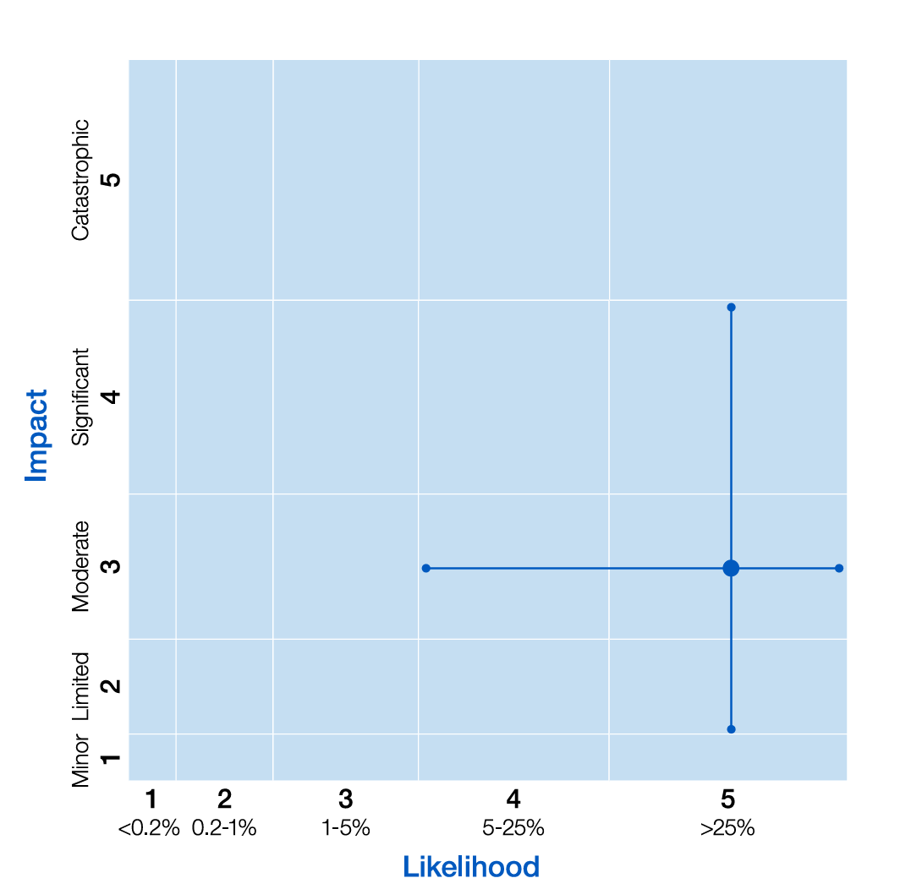
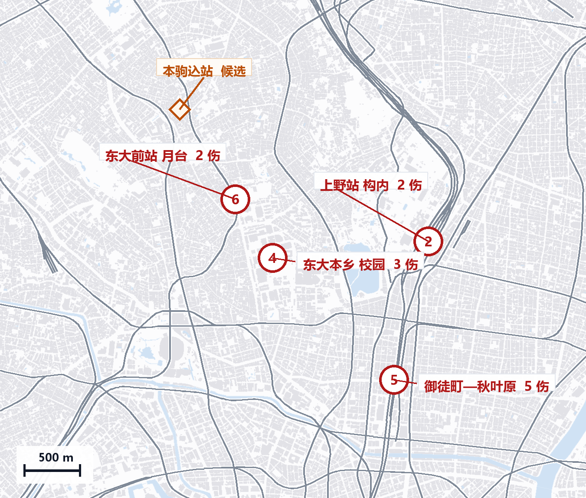
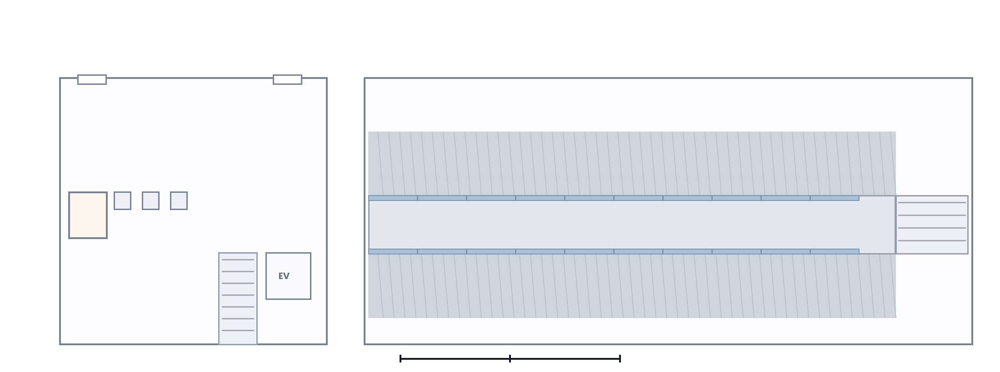
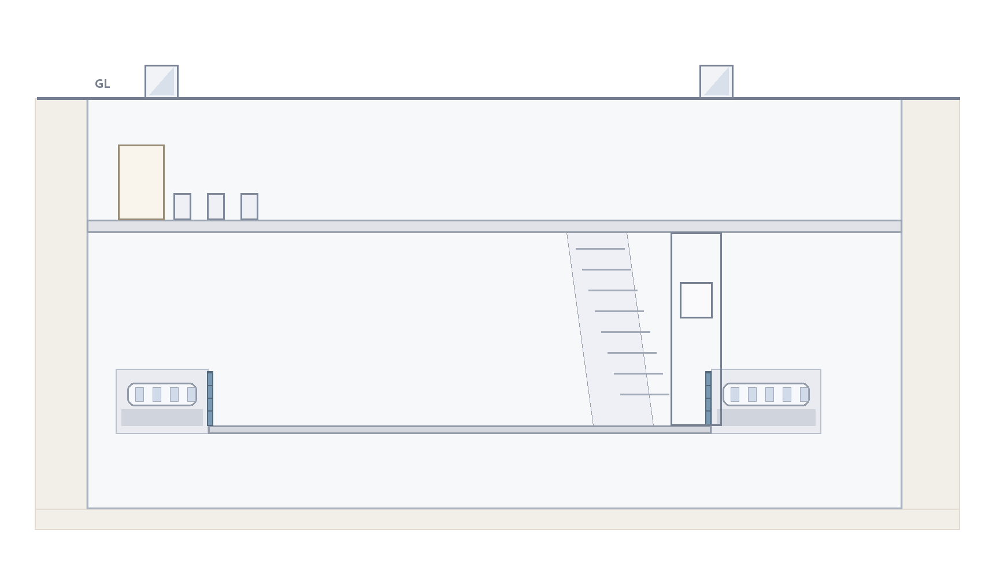

<!DOCTYPE html>
<html lang="zh-CN">
<head>
<meta charset="utf-8">
<title>东京都公共场所「无差别伤害」风险评估 — 小组汇报</title>
<style>
:root{
  --ink:#0F172A; --mut:#64748B; --red:#A3121A; --blue:#1D4E89; --teal:#0B6E6E;
  --line:#E3E7EF; --bg:#FFFFFF; --soft:#F6F8FB;
}
*{box-sizing:border-box;margin:0;padding:0}
html,body{height:100%;background:#0B1220;overflow:hidden;
  font-family:"Microsoft YaHei","PingFang SC","Noto Sans JP",system-ui,sans-serif;color:var(--ink)}
#viewport{position:fixed;inset:0}
#stage{width:1600px;height:900px;background:var(--bg);position:absolute;left:50%;top:50%;
  box-shadow:0 30px 80px rgba(0,0,0,.55);transform-origin:center center}

/* 满幅图版：把边距让给图 */
.slide.big{padding:20px 22px 12px}
.slide.big .hd{margin-bottom:10px}
.slide.big .col{flex:1 1 100%!important}
.slide.big figure{height:100%}
.slide.big figcaption{display:none}

/* ---------- 通用版式 ---------- */
.slide{position:absolute;inset:0;padding:64px 76px 56px;display:none;flex-direction:column;overflow:hidden}
/* 4:3 投影（或窄窗口）：收窄边距、整体字号略放大，避免缩得太小 */
@media (max-aspect-ratio: 3/2){
  .slide{padding:52px 54px 46px}
  table.t{font-size:23px}
  table.t th,table.t td{padding:13px 12px}
  ul.big li{font-size:26px}
  .lead2{font-size:20px;padding:0 54px}
  .chain div b{font-size:22px}
  .sec6{font-size:17px}
}
.slide.on{display:flex;animation:fade .28s ease}
@keyframes fade{from{opacity:0;transform:translateY(6px)}to{opacity:1;transform:none}}

.hd{display:flex;align-items:baseline;gap:18px;border-bottom:2px solid var(--line);padding-bottom:14px;margin-bottom:26px}
.step{font-size:20px;font-weight:700;color:#fff;background:var(--red);padding:3px 12px;border-radius:4px;letter-spacing:.04em}
.step.q{background:#8A94A6}
h1{font-size:52px;line-height:1.15;font-weight:800;letter-spacing:-.01em}
h2{font-size:40px;line-height:1.2;font-weight:800;letter-spacing:-.01em}
.kicker{font-size:20px;color:var(--mut);margin-top:8px}
.body{flex:1;display:flex;gap:40px;min-height:0;align-items:stretch}
.col{flex:1;min-width:0;display:flex;flex-direction:column;justify-content:center}
.col.solo{width:100%;align-self:stretch;display:flex;flex-direction:column;justify-content:center;gap:4px;min-height:0}
.col.solo > table.t,.col.solo > .two,.col.solo > ul.big{flex:0 0 auto}

ul.big{list-style:none;display:flex;flex-direction:column;gap:16px}
ul.big li{font-size:25px;line-height:1.5;padding-left:26px;position:relative}
ul.big li::before{content:"";position:absolute;left:0;top:12px;width:10px;height:10px;
  border-radius:50%;background:var(--red)}
ul.big li b{color:var(--red)}
ul.big li .n{color:var(--blue);font-weight:700}

table.t{width:100%;border-collapse:collapse;font-size:21px}
table.t th,table.t td{border-bottom:1px solid var(--line);padding:11px 12px;text-align:left;vertical-align:top}
table.t th{font-size:18px;color:var(--mut);font-weight:600;letter-spacing:.03em}
table.t td.num{font-variant-numeric:tabular-nums;font-weight:700;white-space:nowrap}
table.t th,table.t td{height:1%}
table.t tr.hi td{background:#FDF4F4}
/* 重点表格：整页只有一张表时放大，后排也看得清 */
.slide.w table.t{font-size:20px}
.slide.w table.t th{font-size:18px}
.slide.w table.t th,.slide.w table.t td{padding:9px 12px}
.slide.k table.t{font-size:27px}
.slide.k table.t th{font-size:19px}
.slide.k table.t th{font-size:19px}
.slide.k table.t th,.slide.k table.t td{padding:17px 14px}
@media (max-aspect-ratio: 3/2){ .slide.k table.t{font-size:29px} }

/* 两栏 + 5×5 矩阵 */
.two{display:flex;gap:36px;align-items:flex-start}
.fine{font-size:18px;color:var(--mut);line-height:1.6;margin-top:16px}
.mxwrap{position:relative}
.swap{margin-top:22px;font-size:19px;line-height:1.65;background:#F4F6FA;border-left:4px solid #1D4E89;
  padding:14px 18px;color:#334155;border-radius:0 6px 6px 0}
.swap b{color:#1D4E89}
.jump{font:inherit;color:#1D4E89;background:#E8EFF8;border:1px solid #C3D4EA;border-radius:6px;
  padding:1px 8px;cursor:pointer;margin:0 2px}
.jump:hover{background:#DCE8F7;border-color:#1D4E89}
.tagx{display:inline-block;margin-left:6px;padding:0 6px;border-radius:4px;background:#EEF2F8;
  color:#5B6B82;font-size:12px;vertical-align:1px}
.ucard{border:1px solid var(--line);border-radius:10px;padding:18px 22px;margin-bottom:16px;display:flex;flex-direction:column;gap:8px}
.ucard.hi{border-color:#EFC7C7;background:#FDF5F5}
.ucard .ut{font-size:16px;letter-spacing:.06em;color:var(--mut)}
.ucard b{font-size:30px;letter-spacing:.01em;font-variant-numeric:tabular-nums}
.ucard.hi b{color:var(--red)}
.ucard em{font-size:16px;color:#475569;font-style:normal}
.mxlab{font-size:15px;color:var(--mut);letter-spacing:.1em;margin-bottom:6px}
.mtx{display:grid;grid-template-columns:38px repeat(5,1fr);gap:5px}
.mtx .rl{font-size:15px;color:#94A3B8;display:grid;place-items:center}
.mtx .cl{font-size:15px;color:#94A3B8;display:grid;place-items:center;height:26px}
.mtx .cell{height:70px;display:grid;place-items:center;border-radius:5px;background:#F2F5F9;
  color:#94A3B8;font-size:16px;font-weight:600;font-variant-numeric:tabular-nums}
.mtx .cell.band{background:#FCEBEB;color:#A3121A;outline:2px solid #A3121A;outline-offset:-2px}
.mtx .cell.band.core{background:#F6D3D3}
.mtx .cell.ex{background:#FFFFFF;outline:2px dashed #1D4E89;color:#1D4E89}

figure{display:flex;flex-direction:column;align-items:center;justify-content:center;min-height:0;width:100%;height:100%}
figure .imgbox{position:relative;display:inline-block;max-width:100%;max-height:100%;line-height:0}
figure .imgbox > img{max-width:100%;max-height:100%;width:auto;height:auto;object-fit:contain;display:block}
figure img{max-width:100%;max-height:100%;width:auto;height:auto;object-fit:contain;display:block}
figcaption{font-size:17px;color:var(--mut);margin-top:10px;text-align:center}

.note{position:absolute;right:76px;bottom:22px;font-size:17px;color:#9AA3B2;letter-spacing:.06em}

/* ---------- 封面 ---------- */
.cover{justify-content:center;gap:26px}
.cover .tag{font-size:20px;letter-spacing:.22em;color:var(--mut)}
.cover h1{font-size:64px;max-width:1150px}
.cover .sub{font-size:24px;color:#334155;line-height:1.7;max-width:1100px}
.cover .meta{font-size:19px;color:var(--mut);margin-top:8px}

/* ---------- 站点图叠层 ---------- */
.station{flex:1 1 auto;display:flex;gap:26px;min-height:0;margin-top:10px}
.figbox{position:relative;flex:1;display:flex;flex-direction:column;align-items:center;justify-content:center;min-width:0}
.imgbox{position:relative;margin:0 auto}
.imgbox img{width:100%;height:100%;object-fit:contain;display:block}
.cap2{font-size:16px;color:var(--mut);margin-top:8px;text-align:center}
.sec6{display:grid;grid-template-columns:repeat(6,1fr);gap:10px;margin-top:8px;font-size:18px;color:#334155}
/* 图上的点击热区 */
.ov .pt{position:absolute;transform:translate(-50%,-50%);width:22px;height:22px;border-radius:50%;
  background:transparent;cursor:help;pointer-events:auto;z-index:3}
.ov .pt b,.ov .pt em,.ov .pt span{position:absolute;left:50%;transform:translateX(-50%);white-space:nowrap;
  opacity:0;transition:opacity .12s;font-style:normal;pointer-events:none}
.ov .pt b{bottom:26px;background:#111827;color:#fff;font-size:14px;font-weight:700;padding:5px 10px;border-radius:6px}
.ov .pt em{bottom:2px;color:#F3F6FA;font-size:13px;background:#111827;padding:3px 9px;border-radius:6px;opacity:0}
.ov .pt span{bottom:-22px;color:#F3F6FA;font-size:13px;background:#111827;padding:3px 9px;border-radius:6px;opacity:0}
.ov .pt:hover b{opacity:1}
.ov .pt:hover em,.ov .pt:hover span{opacity:1;bottom:auto}
.ov .pt:hover em{transform:translate(-50%,-64px);opacity:1}
.ov .pt:hover span{transform:translate(-50%,-40px);opacity:1}
.hotspot{position:absolute;pointer-events:auto;border:2px dashed rgba(176,24,24,.5);border-radius:8px;background:rgba(255,255,255,.04);cursor:zoom-in;padding:0;transition:.15s}
.hotspot:hover{background:rgba(255,236,236,.55);border-color:#B01818}
.hotspot i{position:absolute;right:-8px;top:-32px;font-style:normal;font-size:15px;font-weight:700;color:#B01818;
  background:#fff;border:2px solid #B01818;border-radius:999px;padding:2px 11px;white-space:nowrap}
/* 放大弹层（挂在 body 上，不随舞台缩放） */
#zoom{position:fixed;inset:0;background:rgba(9,13,20,.9);display:none;place-items:center;z-index:99;padding:44px 52px;
  backdrop-filter:blur(3px);cursor:zoom-out}
#zoom.on{display:grid}
#zoom figure{margin:0;display:flex;flex-direction:column;align-items:center;gap:14px}
#zoom img{max-width:100%;max-height:82vh;border-radius:8px;box-shadow:0 24px 70px rgba(0,0,0,.55);background:#fff}
#zoom .zcap{color:#DCE2EC;font-size:19px;letter-spacing:.02em}
#zoom .zx{position:absolute;right:26px;top:20px;width:42px;height:42px;border-radius:50%;border:0;background:rgba(255,255,255,.14);
  color:#fff;font-size:20px;cursor:pointer}
#zoom .zx:hover{background:rgba(255,255,255,.26)}
.sec6 b{color:var(--red);margin-right:7px;font-size:17px}
.lead2{font-size:18.5px;line-height:1.55;color:#25303F;margin-top:10px;max-width:1200px;padding:0 66px}
.lead2 b{color:#111827}
.chain{display:grid;grid-template-columns:repeat(5,1fr);gap:10px;margin-top:10px}
.chain div{background:#F6F8FB;border-radius:8px;padding:14px 12px;display:flex;flex-direction:column;gap:4px;position:relative}
.chain div::after{content:"›";position:absolute;right:-9px;top:50%;transform:translateY(-50%);color:#C3CBD8;font-size:22px}
.chain div:last-child::after{content:""}
.chain b{font-size:20px;color:var(--red);font-variant-numeric:tabular-nums}
.chain span{font-size:19px;font-weight:700;color:#1E293B}
.chain em{font-size:15px;color:var(--mut);font-style:normal}
.reprow{display:grid;grid-template-columns:repeat(3,1fr);gap:20px;flex:0 0 auto;margin-top:6px}
.reprow div{font-size:17px;line-height:1.6;color:#334155;background:#F6F8FB;border-radius:6px;padding:12px 14px}
.reprow .bc{display:block;font-size:15px;letter-spacing:.08em;margin-bottom:4px}
.bc.a{color:var(--blue)} .bc.b{color:var(--red)} .bc.c{color:var(--teal)}
.ov{position:absolute;inset:0;pointer-events:none}
.insetCard{position:absolute;left:1%;top:.5%;width:24%;z-index:40;display:none;background:#fff;
  border:1px solid #DCE3EE;border-radius:10px;box-shadow:0 10px 30px rgba(15,23,42,.22);padding:6px;cursor:zoom-out}
.insetCard.on{display:block}
.insetCard img{width:100%;height:auto;display:block;border-radius:6px}
.insetCard .cap{display:block;font-size:13px;color:#5B6675;padding:6px 3px 2px;line-height:1.45}
.caseBtn{position:absolute;right:76px;top:96px;font:inherit;font-size:16px;color:#1D4E89;background:#EDF3FB;
  border:1px solid #C7D8EE;border-radius:8px;padding:7px 14px;cursor:pointer}
.caseBtn:hover{background:#DCE9F8}
.caseCard{position:absolute;left:76px;right:76px;top:112px;bottom:126px;z-index:45;display:none;
  background:#fff;border:1px solid #DCE3EE;border-radius:12px;box-shadow:0 18px 50px rgba(15,23,42,.20);
  padding:26px 30px;overflow:auto}
.caseCard.on{display:block}
.caseCard .chd{display:flex;align-items:baseline;gap:14px;margin-bottom:14px}
.caseCard .chd b{font-size:25px;color:#111827}
.caseCard .chd span{font-size:15px;color:#6B7686}
.caseCard .cx{margin-left:auto;font-size:22px;line-height:1;color:#8792A3;background:none;border:0;cursor:pointer}
.caseCard .ct{font-size:16px}
.caseCard .ct th,.caseCard .ct td{padding:8px 10px}
.caseCard .csum{margin-top:14px;font-size:16px;line-height:1.7;color:#25303F}
.caseCard .csum b{color:#1D4E89}
.chip{position:absolute;transform:translate(-50%,-50%);pointer-events:auto;
  font-size:15px;font-weight:800;padding:3px 8px;border-radius:5px;background:#fff;
  border:2px solid currentColor;cursor:default;white-space:nowrap;line-height:1.1;
  box-shadow:0 1px 3px rgba(15,23,42,.12);transition:opacity .2s,transform .2s}
.chip.a{color:var(--blue)} .chip.b{color:var(--red)} .chip.c{color:var(--teal)}
.layers[data-layer="a"] .chip.b,.layers[data-layer="a"] .chip.c{opacity:.14}
.layers[data-layer="b"] .chip.a,.layers[data-layer="b"] .chip.c{opacity:.14}
.layers[data-layer="c"] .chip.a,.layers[data-layer="c"] .chip.b{opacity:.14}
.layers[data-layer="all"] .chip{opacity:1}
.chip:hover{transform:translate(-50%,-50%) scale(1.12)}

.toolbar{display:flex;gap:10px;align-items:center;margin-bottom:14px}
.toolbar button{font:inherit;font-size:17px;font-weight:700;padding:7px 16px;border-radius:6px;
  border:2px solid var(--line);background:#fff;color:#334155;cursor:pointer}
.toolbar button[aria-pressed="true"]{border-color:var(--red);color:var(--red);background:#FDF4F4}
.toolbar .hint{font-size:18px;color:var(--mut);margin-left:auto}

/* ---------- 内联图表（矢量，可动） ---------- */
.chart{width:100%;display:flex;align-items:center;justify-content:center;min-height:0}
.chart svg{width:100%;height:auto;max-height:600px;overflow:visible}
.chart svg text{font-size:1.12em}
.c-bar{transform-box:fill-box;transform-origin:bottom;transform:scaleY(0);
  transition:transform .75s cubic-bezier(.2,.85,.25,1)}
.slide.on .c-bar{transform:scaleY(1)}
.c-wbar{transform-box:fill-box;transform-origin:left;transform:scaleX(0);
  transition:transform .7s cubic-bezier(.2,.85,.25,1)}
.slide.on .c-wbar{transform:scaleX(1)}
.c-fade{opacity:0;transition:opacity .5s ease}
.slide.on .c-fade{opacity:1}
.c-line{stroke-dasharray:1600;stroke-dashoffset:1600;transition:stroke-dashoffset 1.3s ease}
.slide.on .c-line{stroke-dashoffset:0}
/* 附录里的图直接显示终态 */
#apx .c-wbar,#apx .c-bar{transform:none}
#apx .c-fade{opacity:1}
#apx .c-line{stroke-dashoffset:0}

/* ---------- 固定翻页按钮 ---------- */
.pgbtn{position:absolute;bottom:24px;width:54px;height:54px;border-radius:50%;border:none;background:#fff;
  box-shadow:0 6px 18px rgba(15,23,42,.18);color:var(--red);font-size:22px;line-height:1;
  display:grid;place-items:center;cursor:pointer;z-index:8;transition:transform .15s,box-shadow .15s,opacity .2s}
.pgbtn:hover{transform:translateY(-2px);box-shadow:0 10px 24px rgba(15,23,42,.26)}
.pgbtn[disabled]{opacity:.3;cursor:default;box-shadow:0 2px 8px rgba(15,23,42,.1)}
#pgPrev{left:24px}
#pgNext{right:24px}
/* 目录按钮：每页右上角，等同 G 键 */
#pgGrid{position:absolute;top:20px;right:22px;z-index:9;height:40px;padding:0 16px;border-radius:20px;
  border:1px solid #DDE3EC;background:#fff;color:#334155;font-size:16px;cursor:pointer;
  display:flex;align-items:center;gap:8px;box-shadow:0 4px 12px rgba(15,23,42,.10);transition:all .15s}
#pgGrid:hover{border-color:var(--red);color:var(--red);box-shadow:0 8px 20px rgba(15,23,42,.16)}
#pgGrid b{font-size:15px;font-weight:700;color:var(--red)}

/* ---------- 页目录 ---------- */
#grid{position:absolute;inset:0;background:#0B1220;z-index:11;display:none;padding:44px 56px;overflow:auto}
#grid.on{display:block}
#grid h4{color:#9FB0CC;font-size:15px;letter-spacing:.18em;margin-bottom:16px}
#grid .cells{display:grid;grid-template-columns:repeat(5,1fr);gap:12px}
#grid .c{background:#151E31;border:1px solid #253149;border-radius:8px;padding:13px 14px;color:#DCE3EF;cursor:pointer;
  min-height:84px;display:flex;flex-direction:column;justify-content:space-between;
  transition:border-color .15s,background .15s}
#grid .c:hover{border-color:var(--red);background:#1B2438}
#grid .c.cur{border-color:var(--red);box-shadow:inset 0 0 0 1px var(--red)}
#grid .c b{display:block;font-size:13px;color:#7F8FA8;margin-bottom:8px;letter-spacing:.06em}
#grid .c span{font-size:15px;line-height:1.35}
#grid .foot{margin-top:22px;font-size:14px;color:#6B7A93;letter-spacing:.06em}
#grid .keys{display:grid;grid-template-columns:repeat(4,1fr);gap:10px 26px;margin-top:22px;padding-top:18px;border-top:1px solid #22304A;font-size:15px;color:#B9C6DA}
#grid .keys kbd{display:inline-block;min-width:26px;text-align:center;background:#1D283C;border:1px solid #33425E;border-radius:5px;padding:2px 7px;margin-right:6px;font-size:14px;color:#DCE3EF;font-family:inherit}
#grid .gfoot{display:flex;gap:14px;margin-top:20px}
#grid .gfoot button{background:#1D283C;border:1px solid #33425E;color:#DCE3EF;border-radius:8px;padding:10px 18px;font-size:15px;cursor:pointer;font-family:inherit}
#grid .gfoot button:hover{border-color:var(--red);color:#fff}

/* ---------- 底部控件 ---------- */
#bar{position:absolute;left:0;right:0;bottom:0;height:4px;background:#EDF0F5}
#bar i{display:block;height:100%;background:var(--red);width:0;transition:width .25s}
#pager{position:absolute;right:104px;bottom:20px;font-size:16px;color:#9AA3B2;font-variant-numeric:tabular-nums}
.note{right:104px}
#nav{position:absolute;left:0;top:0;bottom:0;width:11%;cursor:pointer;z-index:5}
#navR{position:absolute;left:auto;right:0;top:0;bottom:0;width:11%;cursor:pointer;z-index:5}
#navR:hover{background:linear-gradient(270deg,rgba(163,18,26,.05),transparent)}
#nav:hover{background:linear-gradient(90deg,rgba(163,18,26,.05),transparent)}


/* ---------- 附录 ---------- */
#apx{position:absolute;inset:0;background:#0B1220;color:#E6EAF2;padding:56px 70px;display:none;z-index:10;overflow:auto}
#apx.on{display:block}
#apx h3{font-size:26px;margin-bottom:18px;color:#fff}
#apx .grid{display:grid;grid-template-columns:repeat(3,1fr);gap:22px}
#apx .card{background:#151E31;border:1px solid #253149;border-radius:10px;padding:18px 20px}
#apx .card h5{font-size:17px;color:#9FB0CC;letter-spacing:.08em;margin-bottom:8px}
#apx .card p{font-size:18px;line-height:1.6;color:#DCE3EF}
#apx .gl{display:grid;grid-template-columns:1fr 1fr;gap:10px 30px;margin-top:12px}
#apx .gl div{font-size:19px;line-height:1.55;color:#C9D3E4;border-bottom:1px solid #1C2740;padding:7px 0}
#apx .gl b{color:#fff;margin-right:8px;font-weight:700}
#apx .qa{display:grid;gap:12px;margin-top:12px}
#apx .qa div{font-size:19px;line-height:1.62;color:#C9D3E4;background:#141D2E;border-left:3px solid #3A4A66;border-radius:0 6px 6px 0;padding:12px 16px}
#apx .qa b{color:#fff;display:block;margin-bottom:5px;font-size:17px}
#apx .cards3{display:grid;grid-template-columns:repeat(3,1fr);gap:18px;margin-top:26px}
#apx .cards3 .card p{font-size:18px}
#apx .close{position:absolute;right:34px;top:26px;font-size:16px;color:#8FA0BB}
</style>
</head>
<body>
<div id="viewport"><div id="stage"></div></div>

<script>
/* =========================================================================
   内容都在这个数组里改。一页一个对象：
   step   左上角步骤标（"" 表示不显示）
   title  标题        kicker  副标题（可省）
   html   正文（可省）  fig  图片路径（可省）   cap  图注（可省）
   ========================================================================= */
const SLIDES = [
{ step:"", cover:true,
  title:"东京都公共场所「无差别伤害」事件<br>风险评估与预案",
  sub:"以交通节点为空间单元，参照英国国家风险登记册的「游走式攻击」条目",
  meta:"应急管理学 · 汇报 · 2026 年秋季",
  },

{ step:"步骤一 · 选风险", title:"研究对象的界定",
  html:`<ul class="big">\n    <li><b>范围：</b>东京都内车站、站台、车厢与站前广场，一至两人持刀，对不特定对象实施攻击</li>\n    <li><b>判据四条：</b>故意；与被害者无面识；发生于公众可通行场所；造成身体伤害。过失与商业纠纷不纳入</li>\n    <li><b>分类依据：</b>按行为方式归入恐怖主义项下的「游走式攻击」。现场处置动作与恐袭一致；动机认定属司法范畴，不作为本节分类依据</li>\n    <li><b>未选取其他类型的理由：</b>抢夺、诈骗与暴力团冲突均已有成熟对策与统计口径，分析的增量有限；与此研究范围差异较大</li>
  </ul>`,
  },

{ step:"步骤二 · 理解", title:"风险归类：恐怖主义项下的游走式攻击",
  html:`<table class="t">
    <tr><th style="width:22%"></th><th>恐怖主义（NRR: Terrorism）</th><th>社会风险（NRR: Societal · public disorder）</th></tr>
    <tr><td>行为结构</td><td>少数人、有预谋、目标是公众</td><td>多人、动员式、目标是制度</td></tr>
    <tr><td>动机</td><td>不作限定（政治、报复、求死均可）</td><td>长期积怨或单一事件的反弹</td></tr>
    <tr><td>响应重心</td><td>先制、封锁、处置</td><td>维持秩序、疏散、沟通</td></tr>
    <tr class="hi"><td><b>定位</b></td><td colspan="2"><b>按手法归入 Terrorism 下的 marauding attack；不按动机归类</b></td></tr>
  </table>
  <p class="fine"><span style="font-size: 19px;">动机一栏不作限定的依据：ProtectUK（英国政府反恐信息平台）对该攻击的定义只描述行为——攻击者在其移动的场所内寻找目标，尽可能造成杀伤；定义本身不设动机门槛。</span></p>
  <table class="t" style="display:none">
  </table>
  <p class="fine"><span style="font-size: 18px;">社会风险项下收录的是动员型事件，其处置逻辑为维持秩序、疏散与沟通，与本类事件的响应结构不同。</span></p>`,
  },

{ step:"步骤二 · 评估", title:"风险评分：可能性 4–5、影响 2–4、合成 8–20",
  html:`<div class="two">
    <div style="flex:1">
      <table class="t">
        <tr><th>维度</th><th>取值</th><th>依据（一句话）</th></tr>
        <tr><td>评估单元</td><td class="num">都内节点整体</td><td>单元一变，分数从 1 跳到 5</td></tr>
        <tr><td>可能性（2 年）</td><td class="num">4 – 5</td><td>6 年 5 件 ≈ 0.86/年 → 两年 ≥1 次约 <b>82%</b></td></tr>
        <tr><td>影响</td><td class="num">2 – 4</td><td>0 死几伤（2）· 与英国同分（3）· 多点同时（4）</td></tr>
        <tr class="hi"><td><b>风险等级</b></td><td class="num">8 – 20</td><td>中心 12–15；伦敦 T3「HIGH」同级；5 不适用</td></tr>
      </table>
      <p class="fine">矩阵用于确定投入优先级，不用于事件之间的危险度排序。</p>
      <div class="swap">\n        <b>若将评估单元改为单个车站：</b>可能性 1 × 影响 3 ＝ 3 分，同一事件的等级由 HIGH 降至 LOW。<br>因此分值与评估单元、周期须同时标注。
      </div>
    </div>
    <div style="flex:1.05">
      
      <p class="fine" style="margin-top:6px">NRR 的定位方式（非等距刻度）。本研究落在可能性 4–5 × 影响 2–4。</p>
    </div>
  </div>`,
  },

{ step:"步骤二 · 一整张表", title:"风险评估表（十项格式）", w:true,
  html:`<table class="t">
    <tr><th style="width:20%">项目</th><th>本研究的填写</th></tr>
    <tr><td>Risk ID</td><td>R01　公共交通节点的持刃无差别袭击</td></tr>
    <tr><td>灾害类型</td><td>恶意人为风险 → 恐怖主义下的「游走式攻击」</td></tr>
    <tr><td>Hazard 描述</td><td>一到两人在月台、车厢或站前广场持刀近距离袭击，持续 3–8 分钟</td></tr>
    <tr class="hi"><td><b>暴露</b></td><td>换乘站、地铁与私铁车厢、站前广场；八起里六起在站内或车内</td></tr>
    <tr class="hi"><td><b>脆弱性</b></td><td>月台窄、垂直通道少、没有驻警、广播词未固定；停驶权在事业者手里</td></tr>
    <tr><td>可能性（1–5）</td><td class="num">4–5　（按都内整体算，两年内 ≥1 次约 82%）</td></tr>
    <tr><td>影响（1–5）</td><td class="num">2–4，中心 3</td></tr>
    <tr><td>风险等级</td><td class="num">8–20，中心 12–15（与伦敦 T3 同级）</td></tr>
    <tr><td>是否可预警</td><td>部分：事件本身不可预警，可见度改造与站员早期识别可将发现时间前移</td></tr>
    <tr><td>建议措施</td><td>六项近期、一项长期，见第 11 页</td></tr>
  </table>
  <p class="fine">本表采用课程给定的十项格式。<b>暴露</b>与<b>脆弱性</b>在<button class="jump" onclick="show(6)">第 7–8 页</button>展开，<b>建议措施</b>在<button class="jump" onclick="show(9)">第 10–11 页</button>展开；<b>可能性</b>与<b>影响</b>的取值见<button class="jump" onclick="show(3)">上一页</button>。</p>`,
  },

{ step:"步骤二 · 量级", title:"量级对照：3,216 人 / 5 人 / 10 件",
  html:`<div class="chart" data-chart="d1"></div>`,
  },

{ step:"步骤三 · 空间表达 ①", title:"空间分布：七处已发生事件与五处候选点",
  fig:"fig/map1_dushi.png", big:true,
  hot:`<button class="hotspot" style="left:64.4%;top:10.6%;width:11.4%;height:14.4%"
        onclick="toggleInset()"
        title="点击在左侧展开放大图"><i>⤢ 4 处放大 ×4</i></button><i class="pt" style="left:72.60%;top:17.34%"><b>② 上野站</b><em>上野署</em><span>2021-10-15　2 伤</span></i><i class="pt" style="left:69.68%;top:17.85%"><b>④ 东大本乡</b><em>本富士署</em><span>2022-01-15　3 伤</span></i><i class="pt" style="left:71.96%;top:21.72%"><b>⑤ 山手线</b><em>万世桥署</em><span>2024-01-03　5 伤</span></i><i class="pt" style="left:68.98%;top:16.00%"><b>⑥ 东大前站</b><em>本富士署</em><span>2025-05-07　2 伤</span></i><i class="pt" style="left:38.20%;top:46.54%"><b>① 小田急线</b><em>成城署（推定）</em><span>2021-08-06　10 伤</span></i><i class="pt" style="left:30.62%;top:41.81%"><b>③ 京王线</b><em>调布署（推定）</em><span>2021-10-31　17 伤</span></i><i class="pt" style="left:8.43%;top:83.70%"><b>⑦ 町田</b><em>町田署</em><span>2025-09-30　1 死</span></i><i class="pt" style="left:58.02%;top:27.00%"><b>◇ 新宿站</b><em>新宿署 3,595 件/年</em><span>候选：暴露最高</span></i><i class="pt" style="left:59.82%;top:11.27%"><b>◇ 池袋站</b><em>池袋署 1,982 件/年</em><span>候选：暴行件数第二</span></i><i class="pt" style="left:58.23%;top:39.45%"><b>◇ 涩谷站</b><em>涩谷署 2,088 件/年</em><span>候选：动线复杂</span></i><i class="pt" style="left:65.28%;top:51.07%"><b>◇ 品川站</b><em>品川署</em><span>候选：新干线换乘</span></i><i class="pt" style="left:67.94%;top:13.16%"><b>◇ 本驹込站</b><em>驹込署 186 件/年</em><span>候选：与东大前同型</span></i><div class="insetCard" id="insetCard" onclick="toggleInset()" title="点图收起"><span class="cap">文京—台东 3 公里内 4 件＋1 处候选　·　500 m　·　点图收起</span></div>`,
  cap:"7 个已发生点（第 8 件区间未定）＋5 个预测候选（◇）；底图为建筑密度，非地形",
  },

{ step:"步骤三 · 空间表达 ②", title:"东大前站平面：人流、脆弱性与响应三层",
  html:`<div class="toolbar">
    <button data-layer="all" aria-pressed="true">全部</button>
    <button data-layer="a">A 流线</button>
    <button data-layer="b">B 脆弱</button>
    <button data-layer="c">C 响应</button>
    <span class="hint"><br></span>
  </div>
  <div class="station layers" data-layer="all">
    <div class="figbox">
      <div class="imgbox">
        
        <div class="ov">
          <span class="chip a" style="left:6.8%;top:29.5%">A1</span>
          <span class="chip a" style="left:13.6%;top:45.4%">A2</span>
          <span class="chip a" style="left:21.9%;top:68.3%">A3</span>
          <span class="chip a" style="left:39.1%;top:57.3%">A4</span>
          <span class="chip a" style="left:90.5%;top:58.5%">A3'</span>
          <span class="chip b" style="left:52.3%;top:55.1%">B1</span>
          <span class="chip b" style="left:45.5%;top:38.0%">B2</span>
          <span class="chip b" style="left:21.4%;top:82.4%">B3</span>
          <span class="chip b" style="left:15.0%;top:61.0%">B4</span>
          <span class="chip c" style="left:3.9%;top:24.4%">C1</span>
          <span class="chip c" style="left:15.9%;top:67.1%">C2</span>
        </div>
      </div>
    </div>
  </div>
  <div class="reprow">
    <div><b class="bc a">A 人流机会</b>出入口 2 处 · 改札（检票口）3 台 · 垂直动线仅 1 处——客流集中，疏散路径单一</div>
    <div><b class="bc b">B 脆弱性</b>两侧均为轨道（2） · 站台门不防刀具（1） · 无驻警 · 站员为受托企业雇员（4）</div>
    <div><b class="bc c">C 响应</b>派出所与 AED&nbsp; · 站员在岗者等</div>
  </div>
  <p class="fine">表中第 5 行「脆弱性」在此展开为三项：进入不受限、疏散路径单一、门体不防刀具。</p>`,
  },

{ step:"步骤三 · 空间表达 ③", title:"响应时序：0–90 秒内可动与不可动的环节",
  html:`<div class="station" style="flex:1 1 auto;min-height:0">
    <div class="figbox" style="flex:1">
      <div class="imgbox">
        
        <div class="ov">
          <span class="chip a" style="left:20.3%;top:13.6%">1</span>
          <span class="chip a" style="left:22.9%;top:29.8%">2</span>
          <span class="chip a" style="left:58.2%;top:48.0%">3</span>
          <span class="chip a" style="left:38.2%;top:69.4%">4</span>
          <span class="chip c" style="left:15.5%;top:61.0%">5</span>
          <span class="chip a" style="left:76.9%;top:69.2%">6</span>
        </div>
      </div>
    </div>
  </div>
  <div class="sec6">
    <div><b>1</b>出入口（2 处）</div>
    <div><b>2</b>改札 B1</div>
    <div><b>3</b>唯一垂直连络</div>
    <div><b>4</b>岛式月台</div>
    <div><b>5</b>全罩月台门</div>
    <div><b>6</b>轨道（两侧）</div>
  </div>
  <div class="chain">
    <div><b>0 s</b><span>事件发生</span><em>月台・车内</em></div>
    <div><b>~30 s</b><span>报警</span><em>乘客 110／站员对讲</em></div>
    <div><b>~45 s</b><span>警视厅指令</span><em>通信指令中心受理</em></div>
    <div><b>~60 s</b><span>列车停驶</span><em>东京地铁运行指令所</em></div>
    <div><b>~90 s</b><span>现场处置</span><em>本富士署员・消防</em></div>
  </div>
  <p class="lead2"><b>列车行驶期间，袭击者随整车乘客移动，每次停站均增加一处接触面。</b>停驶后现场被限定在约 120 m 的站台段内，警力与救护的抵达位置随之确定，后续响应方可启动；现场制压仍有赖于到场的警察、消防与乘客。</p>`,
  },

{ step:"步骤三 · 部门", title:"责任分工：六个环节与责任主体", k:true,
  html:`<table class="t">
    <tr><th style="width:26%">环节</th><th>责任主体</th><th style="width:30%">依据</th></tr>
    <tr><td>110 报警</td><td>警视厅（通信指令中心）</td><td>警察法</td></tr>
    <tr><td>制压与逮捕</td><td>警视厅·本富士署</td><td>同上</td></tr>
    <tr><td>119 与检伤分类</td><td>东京消防厅</td><td>消防组织法</td></tr>
    <tr class="hi"><td><b>列车运行管制</b></td><td><b>各铁道事业者（运行指令所）</b></td><td>铁道事业法</td></tr>
    <tr><td>站内引导与初期处置</td><td>站员（业务委托·非直营）</td><td>事业者内部规程</td></tr>
    <tr><td>都级综合协调</td><td>都民安全综合对策本部</td><td>都条例</td></tr>
  </table>
  <p class="fine">110、制压与 119 三项均在警察与消防体系内；列车运行由事业者决定，警察无对应权限；都级机构承担协调职能，不直接指挥现场。</p>
  <p class="fine"><span style="font-size: 21px;">六个环节分属警察、消防与事业者三个系统，平时各管一段；事发时必须在同一个时间窗内对齐</span>，这也是下一组建议的出发点。</p>`,
  },

{ step:"步骤三 · 建议", title:"建议措施：六项近期与一项长期",
  html:`<ul class="big">\n    <li><b>管内可实施（3 条）：</b>站台端部增设广角镜与照明（Metro 设施部）；预设广播词定稿并下发（站员与运行指令所）；站员 3 分钟处置演练（受托企业 Metro Commerce）</li>\n    <li><b>需多方协同（2 条）：</b>警视厅与事业者共设指挥席位；消防厅在主要换乘站预置临时救护所与检伤点</li>\n    <li><b>需修改文本（1 条）：</b>将事后复盘与时限公开写入都的规程</li>\n    <li><b>长期项（1 条）：</b>国土交通省制定站台门与监控的组合标准</li>\n    <li><b>不予列入的一些：</b>全面安检、无差别增设摄像头、模糊表述为「加强管理」等</li>
  </ul>
  <p class="fine"><span style="font-size: 20px;">三类建议的实施周期不同：管内三项可于一年内实施，协同项需配合预算年度，文本修改取决于都议会审议。</span></p>`,
  },

{ step:"步骤四 · 为什么", title:"评分方法：区间赋值与评估单元",
  html:`<div class="two">
    <div style="flex:1.1">
      <ul class="big" style="gap:22px">
        <li><span class="n">样本仅 5 起。</span>评价边界变动即引起分值变化，单点赋值难以保持稳健，<br>区间赋值更接近现有证据的精度</li>
        <li><span class="n">分值以评估单元为前提。</span>同一事件按都内整体计为 8–20 分，按单个车站计为 1–3 分</li>
        <li><span class="n">矩阵用于确定投入顺序。</span>其比较对象是「先向何处投入」，不用于事件之间的危险度排序</li>
      </ul>
    </div>
    <div style="flex:.9">
      <div class="ucard hi">
        <span class="ut">单元＝都内节点整体</span>
        <b>4–5 × 2–4 = 8–20</b>
        <em>与伦敦 T3「HIGH」同级 · 资源投向准备度</em>
      </div>
      <div class="ucard">
        <span class="ut">单元＝单个车站</span>
        <b>1 × 3 = 3</b>
        <em>同一事件、同一后果，从 HIGH 掉到 LOW</em>
      </div>
      <p class="fine">分值与评估单元、评估期限须同时标注。</p>
    </div>
  </div>`,
  },

{ step:"步骤四 · 为什么", title:"建议措施的依据",
  html:`<table class="t">
    <tr><th style="width:32%">建议</th><th style="width:30%">主语（谁做）</th><th>对应缺口</th></tr>
    <tr><td>广角镜与照明</td><td>Metro 设施部</td><td>站员在改札口看不见月台两端</td></tr>
    <tr><td>预设广播词</td><td>站员＋运行指令所</td><td>九十秒里一半在临场想措辞</td></tr>
    <tr><td>站员 3 分钟演练</td><td>受托企业（Metro Commerce）</td><td>有设备无动作，演练无考核</td></tr>
    <tr class="hi"><td>共同指挥席位</td><td>警视厅＋事业者</td><td>停驶时点与警力到场对不上</td></tr>
    <tr><td>临时救护所与检伤点（按伤情分级后送）</td><td>东京消防厅</td><td>检伤堵在唯一一条楼梯上</td></tr>
    <tr><td>复盘与时限公开</td><td>都民安全综合对策本部</td><td>没有可查字段，下次评估凭印象</td></tr>
    <tr><td>站台门与监控标准<span class="tagx">长期</span></td><td>国土交通省</td><td>站台侧无统一技术基准</td></tr>
  </table>`,
  },

{ step:"步骤五 · 案例", title:"事件序列：八起已发生事件",
  html:`<div class="chart" data-chart="d2"></div>
  <p class="fine"><span style="font-size: 20px;"><b style="">偶然性：</b>718 天空窗不等于风险下降，也不构成趋势，八起样本不足以外推。<b style="">不确定性：</b>统计口径与报道密度都会影响计数，故只做量级对照。</span><br><br></p>
  <button class="caseBtn" onclick="toggleCase()">▸ 两案对照：东大前 × 京王线</button>
  <div class="caseCard" id="caseCard">
    <div class="chd"><b>两起案例的对照</b><span>东大前站（2025-05-07）／京王线车内（2021-10-31）</span>
      <button class="cx" onclick="toggleCase()">×</button></div>
    <table class="t ct">
      <tr><th style="width:20%">方面</th><th style="width:40%">东大前站　2025-05-07</th><th>京王线车内　2021-10-31</th></tr>
      <tr><td>发生位置</td><td>月台，随后进入已停站的车厢</td><td>行驶中的特急车厢</td></tr>
      <tr><td>手段</td><td>刃物</td><td>刃物＋纵火</td></tr>
      <tr><td>伤情</td><td>2 人受伤，其中 1 人重伤</td><td>17 人送医，1 人重伤</td></tr>
      <tr><td>时间</td><td>18:55 前后</td><td>20 时前后</td></tr>
      <tr><td>现场何时停下</td><td>列车本已停站，无需制动</td><td>紧急停车于国领站</td></tr>
      <tr><td>谁最先制止</td><td>乘客合力压制，在勤警察当场逮捕</td><td>乘客报警，停车后疏散</td></tr>
      <tr><td>司法结果</td><td>杀人未遂等，2025-09 起诉</td><td>懲役 23 年，2023 年确定</td></tr>
      <tr><td>可用的控制点</td><td>全罩式月台门（防坠落，不防持刀）、站内广播、站员</td><td>车厢内非常装置、紧急通报、停驶判断</td></tr>
    </table>
    <div class="csum">
      <p><b>相同：</b>单人、刃物、狭小空间、对象不特定，都发生在晚间客流时段，都以「车停下来」为处置起点。</p>
      <p><b>不同：</b>一个发生在月台与停站车厢，一个在行驶车厢并叠加纵火；因此前者靠人制止，后者靠先停车再疏散。伤者从 2 人放大到 17 人，主要差别在「是否还在移动」与「是否叠加火」。两种情形对应我们的两条建议：站台侧的可见度与广播，车厢侧的停驶判断。</p>
    </div>
  </div>`,
  },

{ step:"步骤五 · 对比", title:"制度对照：与伦敦同类条目比较", k:true,
  html:`<table class="t">
    <tr><th style="width:24%"></th><th>东京（本研究）</th><th>伦敦（Risk Register v14, T3）</th></tr>
    <tr><td>场景</td><td>交通节点持刃无差别袭击</td><td>Attacks on Transport（含持刀者）</td></tr>
    <tr><td>可能性口径</td><td>两年 ≥1 次 ≈ <b>82%</b></td><td>5–25%（annual，2 年有效）</td></tr>
        <tr><td>既有控制</td><td>全罩式月台门、车内防犯摄像头（2023 年起对新造车辆义务化）、站员与交番、事业者运行指令所</td><td>拥挤场所警示、营运者应急计划、CTSA（反恐安全顾问）培训、Op Servator（不可预测巡逻，便衣与制服混编）</td></tr>
    <tr class="hi"><td><b>制度文本</b></td><td>铁道事业法、事业者内部规程；无单站专项预案</td><td>Martyn's Law 给以法定减害义务；NRR 条目供规划参考</td></tr>
  </table>
  <p class="fine">Martyn's Law 为英国要求公共场所实施反恐减害的法律，正式名称为 Protection of Premises。<br><span style="font-size: 20px;">两边都有措施；启动依据与主体不同。</span></p>`,
  },

{ step:"", title:"简单收束",
  html:`<ul class="big">\n    <li><b>一：</b>该类事件占比 0.16%，但在短时间内可同时紧急调动 110、119 与列车运行三个系统。不能认为统计数字较小则风险小</li>\n    <li><b>二：</b>风险高的车站，实际上可能不是仅仅客流大的或者易发案的车站（受综合系统与复杂因素影响）</li>\n    <li><b>三：</b>东京的短板不只在预警，还在于单站预案与演练的缺位——多者共同决定响应的第一个 90 秒</li>
  </ul>`,
  }
];

/* ---------------- 渲染 ---------------- */
const stage = document.getElementById("stage");
let cur = 0;

SLIDES.forEach((s,i)=>{
  const el = document.createElement("section");
  el.className = "slide" + (s.cover ? " cover" : "") + (s.big ? " big" : "") + (s.k ? " k" : "") + (s.w ? " w" : "");
  let h = "";
  if (s.cover){
    h += `<div class="tag">RISK ASSESSMENT · GROUP PRESENTATION</div>
          <h1>${s.title}</h1>
          <div class="sub">${s.sub||""}</div>
          <div class="meta">${s.meta||""}</div>`;
  } else {
    h += `<div class="hd">${s.step?`<span class="step">${s.step}</span>`:""}<h2>${s.title}</h2></div>`;
    h += `<div class="body">`;
    if (s.fig){
      const hot = s.hot ? `<div class="ov">${s.hot}</div>` : "";
      h += `<div class="col" style="flex:1.35"><figure><div class="imgbox">${hot}</div><figcaption>${s.cap||""}</figcaption></figure></div>`;
      if (s.kicker) h += `<div class="col" style="flex:.65"><p class="kicker">${s.kicker}</p></div>`;
    } else {
      h += `<div class="col solo">${s.html || ""}</div>`;
    }
    h += `</div>`;
    h += `<div class="note">${i+1} / ${SLIDES.length}</div>`;
  }
  el.innerHTML = h;
  stage.appendChild(el);
});

/* 页码条 */
const bar = document.createElement("div"); bar.id="bar"; bar.innerHTML="<i></i>"; stage.appendChild(bar);
const navL = null, navR = null;

/* 讲稿抽屉 */

/* 附录 */
const apx = document.createElement("div"); apx.id="apx";
apx.innerHTML = `<div class="close">P 关闭</div>
<h3>术语：日语词与缩写</h3>
<div class="gl">
  <div><b>無差別</b>不分对象随机下手，与「针对性报复」相对。</div>
  <div><b>通り魔</b>突然袭击过路人的犯罪，日本警方统计中的固定类目。</div>
  <div><b>構内</b>车站内部，售票厅、通道、站台均包含在内。</div>
  <div><b>改札</b>检票口，也指检票所在楼层。</div>
  <div><b>ホーム</b>站台；全罩式ホームドア指到顶的站台门。</div>
  <div><b>業務委託駅</b>站务委托外部公司运营的车站。</div>
  <div><b>交番</b>街头派出所，负责巡逻与先期处置。</div>
  <div><b>本富士署</b>警视厅下辖警署，辖区为文京区。</div>
  <div><b>警視庁</b>东京都警察本部。</div>
  <div><b>通信指令中心</b>110 接警与调度中枢。</div>
  <div><b>運行指令所</b>铁道公司的列车调度所，停驶由它下令。</div>
  <div><b>東京メトロ 南北線</b>东京地铁南北线，东大前站为 N12。</div>
  <div><b>緊急対処事態</b>国民保护法下的紧急事态，需国家认定。</div>
  <div><b>MTA</b>marauding terrorist attack，边移动边寻找目标的袭击方式。</div>
  <div><b>NRR</b>英国国家风险登记册，按情景与影响分级。</div>
  <div><b>RWCS</b>reasonable worst case scenario，合理最坏情景。</div>
  <div><b>T3 / T4</b>伦敦登记册条目编号：T3 交通袭击，T4 公众可达场所袭击。</div>
  <div><b>JESIP</b>英国多机构联合响应原则。</div>
  <div><b>Martyn's Law</b>英国要求公共场所实施反恐减害的法律。</div>
  <div><b>CCTV</b>监控摄像系统。</div>
  <div><b>AED</b>自动体外除颤器。</div>
  <div><b>110 / 119</b>日本报警电话与急救消防电话。</div>
  <div><b>ProtectUK</b>英国政府与国家反恐警务合办的反恐信息平台，提供场所安全指南与培训。</div>
  <div><b>marauding attack</b>游走式攻击：在场所内移动、尽可能杀伤在场人员，登记册与政府指南均用此说法。</div>
  <div><b>Attacks on Transport</b>伦敦登记册 T3 条目名，手段含爆裂物、有害物质与持刀者。</div>
  <div><b>Risk Register v14</b>伦敦风险登记册第 14 版，2025 年 1 月发布。</div>
  <div><b>CTSA</b>Counter-Terrorism Security Adviser，反恐安全顾问，警方派驻、为场所做安全评估。</div>
  <div><b>Op Servator</b>伦敦警方与铁路警察的不可预测巡逻行动，便衣与制服混编、随机出现。</div>
  <div><b>检伤点</b>现场按伤情分级、决定后送顺序的临时处置点。</div>
  <div><b>铁道事业法</b>日本规定铁道事业者运行与安全义务的法律。</div>
</div>
<h3 style="margin-top:32px">常见问题</h3>
<div class="qa">
  <div><b>为什么采用英国的国家风险登记册，而不用日本的分类？</b>日本对无差别杀伤没有独立评估条目，警务统计按罪名归类，无法直接用于编制预案；英国登记册以情景为单位且公开评分方法，可与课程的十项表格对接。此处为方法移植，不涉及分类的司法含义。</div>
  <div><b>为什么只选一个车站？</b>站点层面要检验的是脆弱性如何转化为响应时距。构造清楚的小站足以说明机制；大站的多出入口与多事业者共管会引入无关变量。选小站是为了让机制可见，不代表大站风险更低。</div>
  <div><b>为什么不使用「随机」一词？</b>判据是「与被害者无面识」，即对象不可预选。八起中有两起针对特定校名或站名，但仍非针对特定个人。「随机」暗示概率分布，本研究未做概率推断。</div>
  <div><b>数据可以复现吗？</b>事件库取自公开报道，逐条列入来源表；统计口径取自警视厅年报第 30、31、33、45 表，可按原格式重算。唯一不可复现的是现场构造数据，已在附注中标为待核实。</div>
  <div><b>可能性为什么取 4–5，而非 1–2？</b>登记册的可能性指评估期间内至少发生一次。按都内整体计，六年间五起，两年内至少一次约 82%，落在 5 档；若改为单一车站则降至 1 档。这是尺度效应，不是误差，须与分值同时标注。</div>
  <div><b>影响为什么最高只到 4？</b>5 分的门槛是死亡超过 1,000 人或伤者超过 2,000 人，一至两人持刀在结构上无法达到。4 分对应多点同时发生并叠加高峰客流与换乘枢纽的情形。</div>
  <div><b>为什么不建议全面安检与增设摄像头？</b>安检的成本与通行效率不成比例，且不改变车厢内的接触面；摄像头的边际收益取决于是否配有可执行的响应流程。本研究把资源优先投向可见度、广播与演练三项。</div>
  <div><b>90 秒是实测还是假设？</b>是依各环节职责推演的设计假设。日本未设强制的复盘与时限公开制度，公开材料中查不到分环节用时；若能取得事业者的运行记录，应替换为实测值。</div>
  <div><b>结论能否用于其他城市？</b>机制部分可迁移，例如停驶权归属与垂直动线单一化；分值与事件序列依赖东京的统计口径与制度条件，不宜直接移植。</div>
  <div><b>建议为什么写到部门，而不是政策方向？</b>预案的可执行性取决于主语与时间窗。只写方向无法核验；写到部门与动作，才能在下一次演练中被检验。</div>
</div>
<div class="cards3">
  <div class="card"><h5>为什么算恐怖主义</h5><p>ProtectUK 对 MTA 的定义；NRR 2025 将 marauding attacks 列于 Terrorism 章 p32；RWCS 含低技术手段。</p></div>
  <div class="card"><h5>为什么不算发生率</h5><p>罪名口径、件与人、署区与站、非遍历样本——四处错位，只能做量级对照。</p></div>
  <div class="card"><h5>术语使用</h5><p>全文日语词与缩写均按上节口径使用，正文首次出现处已加注。</p></div>
</div>
<h3 style="margin-top:32px">署别发案与时间带</h3>
<div style="background:#fff;border-radius:10px;padding:16px 18px">
  <div class="chart" data-chart="d3"></div>
</div>
`;
stage.appendChild(apx);

/* ---------------- 5×5 矩阵 ---------------- */
(function(){
  const box = document.getElementById("mtx"); if(!box) return;
  const head = document.createElement("div"); head.className="rl"; box.appendChild(head);
  for (let p=1;p<=5;p++){ const c=document.createElement("div"); c.className="cl"; c.textContent="P"+p; box.appendChild(c); }
  for (let i=5;i>=1;i--){
    const rl=document.createElement("div"); rl.className="rl"; rl.textContent="I"+i; box.appendChild(rl);
    for (let p=1;p<=5;p++){
      const c=document.createElement("div"); c.className="cell"; c.textContent=p*i;
      const band = (p>=4 && i>=2 && i<=4);
      if (band) c.classList.add("band");
      if (p===4 && i===3) c.classList.add("core");
      if (p===3 && i===4){ c.className = "cell ex"; c.textContent = "12"; c.title="老师示例：可能性 3 × 影响 4"; }
      box.appendChild(c);
    }
  }
})();

/* ---------------- 控制 ---------------- */
const slides = [...stage.querySelectorAll(".slide")];
function show(i){
  const _k=document.getElementById('caseCard'); if(_k){_k.classList.remove('on');} const _b=document.querySelector('.caseBtn'); if(_b){_b.style.visibility='visible';}
  i = Math.max(0, Math.min(SLIDES.length-1, i));
  cur = i;
  slides.forEach((s,k)=> s.classList.toggle("on", k===i));
  bar.querySelector("i").style.width = ((i+1)/SLIDES.length*100)+"%";
  fitFigs();
}
show(0);

document.addEventListener("keydown", e=>{
  if (e.key==="ArrowRight"||e.key===" "||e.key==="PageDown"){ e.preventDefault(); show(cur+1); }
  if (e.key==="ArrowLeft"||e.key==="PageUp"){ e.preventDefault(); show(cur-1); }
  if (e.key==="Home") show(0);
  if (e.key==="End") show(SLIDES.length-1);
  if (e.key==="p"||e.key==="P") apx.classList.toggle("on");
  if (e.key==="Escape"){ apx.classList.remove("on"); document.getElementById("zoom").classList.remove("on"); }
  if (e.key==="f"||e.key==="F"){
    if (!document.fullscreenElement) document.documentElement.requestFullscreen();
    else document.exitFullscreen();
  }
});
/* nav zones removed: 用固定按钮代替 */
apx.addEventListener("click", e=>{ if(e.target===apx||e.target.className==="close") apx.classList.remove("on"); });

/* 图层开关 */
document.addEventListener("click", e=>{
  const btn = e.target.closest(".toolbar button"); if(!btn) return;
  const wrap = btn.closest(".slide").querySelector(".layers");
  const v = btn.dataset.layer;
  wrap.dataset.layer = v;
  btn.closest(".toolbar").querySelectorAll("button").forEach(b=> b.setAttribute("aria-pressed", b===btn));
});

/* 叠层图：把 .imgbox 精确裁到图片实际渲染尺寸，chip 才压得准 */
function fitFigs(){
  document.querySelectorAll(".figbox").forEach(box=>{
    const ib = box.querySelector(".imgbox"); if(!ib) return;
    const img = ib.querySelector("img"); if(!img || !img.naturalWidth) return;
    const cap = box.querySelector(".cap2");
    const H = box.clientHeight - (cap ? cap.offsetHeight + 8 : 0);
    const W = box.clientWidth;
    const s = Math.min(W/img.naturalWidth, H/img.naturalHeight);
    ib.style.width  = Math.round(img.naturalWidth * s) + "px";
    ib.style.height = Math.round(img.naturalHeight * s) + "px";
  });
}

/* 自适应缩放：16:9 内缩；窄屏（4:3 投影）改用略收紧的版心，避免留白太多 */
function fit(){
  const vw = (window.visualViewport && window.visualViewport.width) || innerWidth;
  const vh = (window.visualViewport && window.visualViewport.height) || innerHeight;
  const s = Math.min(vw/1600, vh/900);
  stage.style.transform = `translate(-50%,-50%) scale(${s})`;
  document.documentElement.style.setProperty("--scale", s.toFixed(4));
  fitFigs();
}
let fitTimer=null;
const refit=()=>{ clearTimeout(fitTimer); fitTimer=setTimeout(fit, 60); };
addEventListener("resize", refit);
addEventListener("orientationchange", refit);
document.addEventListener("fullscreenchange", refit);
if (window.visualViewport) window.visualViewport.addEventListener("resize", refit);
fit();
window.addEventListener("load", fitFigs);
</script>
<script>
/* =========================================================================
   矢量图表（可动）＋ 固定翻页按钮 ＋ 页目录
   ========================================================================= */
const INK="#0F172A", MUT="#64748B", RED="#A3121A", BLU="#1D4E89", TEAL="#0B6E6E", LINE="#E3E7EF";

function esc(s){return s;}

/* ---------- 图 1：三角对比 ---------- */
function chartD1(){
  const W=1120,H=470;
  const mix=3216, d=69, s=396, l=2751;
  const bw=580, bx=20, by=74, bh=54;
  const wd=bw*d/mix, ws=bw*s/mix, wl=bw*l/mix;
  const yrs=[2017,2018,2019,2020,2021,2022,2023,2024], vals=[5,7,3,9,6,4,9,10];
  const px0=676, px1=1086, py0=392, py1=74, ymax=12;
  const X=i=>px0+(px1-px0)*i/(yrs.length-1);
  const Y=v=>py0-(py0-py1)*v/ymax;
  const poly=vals.map((v,i)=>`${X(i)},${Y(v)}`).join(" ");
  let g="";
  // 左：堆叠条
  g+=`<text x="${bx}" y="28" font-size="21" font-weight="700" fill="${INK}">都内 2024 年被杀伤人数</text>`;
  g+=`<text x="${bx}" y="54" font-size="15" fill="${MUT}">刑法犯 全罪种 · 合计 3,216 人</text>`;
  g+=`<rect class="c-wbar" style="transition-delay:.05s" x="${bx}" y="${by}" width="${wd}" height="${bh}" fill="${RED}"/>`;
  g+=`<rect class="c-wbar" style="transition-delay:.18s" x="${bx+wd}" y="${by}" width="${ws}" height="${bh}" fill="#D97706"/>`;
  g+=`<rect class="c-wbar" style="transition-delay:.30s" x="${bx+wd+ws}" y="${by}" width="${wl}" height="${bh}" fill="#94A3B8"/>`;
  const lg=[["死亡 69（2.1%）",RED,0],["重伤 396（12.3%）","#D97706",1],["轻伤 2,751（85.5%）","#94A3B8",2]];
  lg.forEach(([t,c,i])=>{
    g+=`<rect class="c-fade" style="transition-delay:${.5+i*.08}s" x="${bx}" y="${by+bh+22+i*26}" width="13" height="13" fill="${c}"/>`;
    g+=`<text class="c-fade" style="transition-delay:${.5+i*.08}s" x="${bx+22}" y="${by+bh+33+i*26}" font-size="16" fill="#334155">${t}</text>`;
  });
  // 左下：0.16% 标注
  const ty=300;
  g+=`<text class="c-fade" style="transition-delay:.9s" x="${bx}" y="${ty}" font-size="18" font-weight="700" fill="${INK}">其中：无差别伤害　2024 年 1 件 / 5 人受伤</text>`;
  g+=`<rect x="${bx}" y="${ty+16}" width="6" height="42" fill="${RED}"/>`;
  g+=`<path d="M ${bx+8} ${ty+37} L ${bx+70} ${ty+92}" stroke="${RED}" stroke-width="2" fill="none"/>`;
  g+=`<text class="c-fade" style="transition-delay:1.1s" x="${bx+82}" y="${ty+98}" font-size="26" font-weight="800" fill="${RED}">5 人 ＝ 全部的 0.16%</text>`;
  g+=`<text class="c-fade" style="transition-delay:1.25s" x="${bx}" y="${ty+140}" font-size="16" fill="${MUT}">案件：JR 山手线 御徒町—秋叶原 行驶车厢内（2024-01-03，持刀刺伤 5 人）</text>`;
  g+=`<text class="c-fade" style="transition-delay:1.35s" x="${bx}" y="${ty+168}" font-size="17" font-weight="700" fill="${BLU}" data-he-unit="253" data-he-kind="chart">事件占比并不总是决定资源分配，有时后果结构决定。</text>`;
  // 右：折线
  g+=`<text x="${px0}" y="28" font-size="21" font-weight="700" fill="${INK}">全国「通り魔」认知件数</text>`;
  g+=`<text x="${px0}" y="54" font-size="15" fill="${MUT}">2017–2024（件，含未遂）</text>`;
  [0,3,6,9,12].forEach(v=>{
    g+=`<line x1="${px0}" y1="${Y(v)}" x2="${px1}" y2="${Y(v)}" stroke="#EDF0F5" stroke-width="1"/>`;
    g+=`<text x="${px0-10}" y="${Y(v)+5}" font-size="13" fill="#94A3B8" text-anchor="end">${v}</text>`;
  });
  g+=`<polyline class="c-line" style="transition-delay:.15s" points="${poly}" fill="none" stroke="${RED}" stroke-width="3" stroke-linejoin="round" stroke-linecap="round"/>`;
  vals.forEach((v,i)=>{
    g+=`<circle class="c-fade" style="transition-delay:${.5+i*.07}s" cx="${X(i)}" cy="${Y(v)}" r="5.5" fill="#fff" stroke="${RED}" stroke-width="3"/>`;
    g+=`<text class="c-fade" style="transition-delay:${.55+i*.07}s" x="${X(i)}" y="${Y(v)-14}" font-size="16" font-weight="700" fill="${i===vals.length-1?RED:'#334155'}" text-anchor="middle">${v}</text>`;
    g+=`<text x="${X(i)}" y="${py0+22}" font-size="13" fill="${MUT}" text-anchor="middle">${yrs[i]}</text>`;
  });
  g+=`<text class="c-fade" style="transition-delay:1.3s" x="${px1}" y="${py0+58}" font-size="16" font-weight="700" fill="${RED}" text-anchor="end">2024 年 10 件，为 2008 年以来最高</text>`;
  return `<svg viewBox="0 0 ${W} ${H}" role="img">${g}</svg>`;
}

/* ---------- 图 2：事件序列 ---------- */
function chartD2(){
  const W=1120,H=520, base=360;
  const ev=[
    ["2021-08-06","小田急线 车内",10,1],
    ["2021-10-15","JR 上野 构内",2,1],
    ["2021-10-31","京王线 车内",17,1],
    ["2022-01-15","东大本乡 校园",3,0],
    ["2024-01-03","JR 山手线 车内",5,1],
    ["2025-05-07","东大前 月台",2,1],
    ["2025-09-30","町田 公寓外阶梯",0,0],
    ["2026-01-23","JR 埼京线 车内",0,1]
  ];
  const gaps=[70,16,76,718,490,146,115];
  const x0=78, step=(W-160)/(ev.length-1);
  let g="";
  ev.forEach((e,i)=>{
    const x=x0+step*i, inj=e[2], isDeath=e[0]==="2025-09-30";
    const h=isDeath?26:Math.max(26,inj*14+8);
    const col=e[3]?BLU:"#94A3B8";
    g+=`<rect class="c-bar" style="transition-delay:${.08*i}s" x="${x-20}" y="${base-h}" width="40" height="${h}"
         fill="${isDeath?'#fff':col}" stroke="${isDeath?RED:col}" stroke-width="${isDeath?3:0}"/>`;
    g+=`<text class="c-fade" style="transition-delay:${.35+.08*i}s" x="${x}" y="${base-h-52}" font-size="16" font-weight="700"
         fill="${isDeath?RED:INK}" text-anchor="middle">${e[1]}</text>`;
    g+=`<text class="c-fade" style="transition-delay:${.42+.08*i}s" x="${x}" y="${base-h-30}" font-size="14"
         fill="${MUT}" text-anchor="middle">${e[0]}</text>`;
    const lab=isDeath?"1 死":(inj?inj+" 伤":"未致伤");
    g+=`<text class="c-fade" style="transition-delay:${.5+.08*i}s" x="${x}" y="${base-h-10}" font-size="15" font-weight="700"
         fill="${isDeath?RED:'#334155'}" text-anchor="middle">${lab}</text>`;
  });
  g+=`<line x1="40" y1="${base}" x2="${W-40}" y2="${base}" stroke="#CBD5E1" stroke-width="2"/>`;
  gaps.forEach((d,i)=>{
    const xa=x0+step*i+26, xb=x0+step*(i+1)-26, y=base+40;
    const hot=d>=490;
    g+=`<line class="c-fade" style="transition-delay:${.9+i*.05}s" x1="${xa}" y1="${y}" x2="${xb}" y2="${y}"
         stroke="${hot?RED:'#C3CBD8'}" stroke-width="1.5"/>`;
    g+=`<path class="c-fade" style="transition-delay:${.9+i*.05}s" d="M ${xb-7} ${y-5} l 7 5 l -7 5"
         stroke="${hot?RED:'#C3CBD8'}" stroke-width="1.5" fill="none"/>`;
    g+=`<text class="c-fade" style="transition-delay:${.95+i*.05}s" x="${(xa+xb)/2}" y="${y-9}" font-size="14"
         font-weight="${hot?700:400}" fill="${hot?RED:'#8A94A6'}" text-anchor="middle">${d} 天</text>`;
  });
    g+=`<text class="c-fade" style="transition-delay:1.65s" x="40" y="${base+126}" font-size="15" fill="${MUT}">按发生顺序排列（非等距）｜实心＝公共交通节点，空心＝其他公共通行空间｜合计 1 死 39 伤</text>`;
  return `<svg viewBox="0 80 ${W} 450" role="img">${g}</svg>`;
}

/* ---------- 图 3：署别与时间带（附录用） ---------- */
function chartD3(){
  const W=1120,H=560;
  const rows=[["新宿",3595,1],["町田",2118,0],["涩谷",2088,0],["蒲田",2031,0],["池袋",1982,0],
              ["立川",1970,0],["田无",1715,0],["小松川",1627,0],["本富士",336,2],["驹込",186,3]];
  const bx=150, maxw=760, mx=3595;
  let g=`<text x="20" y="26" font-size="21" font-weight="700" fill="${INK}">2024 年各署刑法犯认知件数</text>`;
  rows.forEach((r,i)=>{
    const y=54+i*42, w=maxw*r[1]/mx;
    const c=r[2]===1?RED:(r[2]===2?RED:(r[2]===3?"#64748B":"#7FA6D9"));
    g+=`<text x="${bx-12}" y="${y+20}" font-size="16" fill="${INK}" text-anchor="end">${r[0]}</text>`;
    g+=`<rect class="c-wbar" style="transition-delay:${.05*i}s" x="${bx}" y="${y}" width="${Math.max(3,w)}" height="26" rx="3" fill="${c}"/>`;
    g+=`<text class="c-fade" style="transition-delay:${.3+i*.05}s" x="${bx+Math.max(3,w)+10}" y="${y+19}" font-size="15"
         font-weight="700" fill="#334155">${r[1].toLocaleString()}</text>`;
  });
  g+=`<text class="c-fade" style="transition-delay:1s" x="20" y="500" font-size="17" font-weight="700" fill="${RED}">新宿署 3,595 ＝ 本富士署 336 的 10.7 倍</text>`;
  g+=`<text class="c-fade" style="transition-delay:1.1s" x="20" y="526" font-size="16" fill="#334155">但风险最高的站不是犯罪统计最高的站——东大前在本富士署辖内。</text>`;
  return `<svg viewBox="0 0 ${W} ${H}" role="img">${g}</svg>`;
}

const CHARTS={d1:chartD1,d2:chartD2,d3:chartD3};
document.querySelectorAll("[data-chart]").forEach(el=>{
  const fn=CHARTS[el.dataset.chart]; if(fn) el.innerHTML=fn();
});

/* ---------- 固定翻页按钮 ---------- */
const btnPrev=document.createElement("button");
btnPrev.id="pgPrev"; btnPrev.className="pgbtn"; btnPrev.title="上一页（←）"; btnPrev.textContent="‹";
const btnNext=document.createElement("button");
btnNext.id="pgNext"; btnNext.className="pgbtn"; btnNext.title="下一页（→）"; btnNext.textContent="›";
stage.appendChild(btnPrev); stage.appendChild(btnNext);
btnPrev.onclick=()=>show(cur-1);
btnNext.onclick=()=>show(cur+1);

/* 目录按钮（等同 G 键） */
const btnGrid=document.createElement("button");
btnGrid.id="pgGrid"; btnGrid.title="页目录（G）";
btnGrid.innerHTML="<b>▦</b>目录";
stage.appendChild(btnGrid);

/* ---------- 页目录 ---------- */
const grid=document.createElement("div"); grid.id="grid";
grid.innerHTML=`<h4>目录 · 点击任意页跳转</h4><div class="cells">`+
  SLIDES.map((s,i)=>`<div class="c" data-i="${i}"><b>${String(i+1).padStart(2,"0")}${s.step?" · "+s.step:""}</b><span>${s.title}</span></div>`).join("")+
  `</div>
  <div class="keys">
    <div><kbd>←</kbd><kbd>→</kbd>　上一页 / 下一页</div>
    <div><kbd>空格</kbd>　下一页</div>
    <div><kbd>1</kbd>–<kbd>9</kbd><kbd>0</kbd>　直达第 1–10 页</div>
    <div><kbd>G</kbd>　打开/关闭本目录</div>
    <div><kbd>P</kbd>　附录（术语表与追问材料）</div>
    <div><kbd>F</kbd>　全屏 / 退出全屏</div>
    <div><kbd>Esc</kbd>　关闭当前弹层</div>
    <div>图上「⤢ 4 处放大」　打开文京—台东放大图</div>
  </div>
  <div class="gfoot">
    <button id="gApx">打开附录（P）</button>
    <button id="gClose">关闭目录（Esc）</button>
  </div>`;
stage.appendChild(grid);
grid.addEventListener("click",e=>{
  if(e.target.id==="gApx"){ grid.classList.remove("on"); apx.classList.add("on"); return; }
  if(e.target.id==="gClose"){ grid.classList.remove("on"); return; }
  const c=e.target.closest(".c"); if(!c) return;
  show(+c.dataset.i); grid.classList.remove("on");
});
btnGrid.onclick=()=>{ grid.classList.toggle("on"); btnGrid.blur(); };

/* 让 show() 同时维护按钮状态与目录高亮 */
const _origShow = show;
show = function(i){
  _origShow(i);
  if(btnPrev) btnPrev.disabled = (cur<=0);
  if(btnNext) btnNext.disabled = (cur>=SLIDES.length-1);
  grid.querySelectorAll(".c").forEach(el=> el.classList.toggle("cur", +el.dataset.i===cur));
};
show(cur);
document.addEventListener("keydown",e=>{
  if(e.key==="g"||e.key==="G"){ grid.classList.toggle("on"); return; }
  if(e.key==="Escape"){ grid.classList.remove("on"); return; }
  if(e.key>="1"&&e.key<="9"){ show(+e.key-1); return; }
  if(e.key==="0"){ show(9); return; }
});
/* ---- 图上放大弹层 ---- */
const zov = document.createElement("div");
zov.id = "zoom";
zov.innerHTML = `<figure><div class="zcap"></div></figure><button class="zx" aria-label="关闭">✕</button>`;
document.body.appendChild(zov);
window.toggleCase = () => {
  const c = document.getElementById('caseCard');
  const b = document.querySelector('.caseBtn');
  if (!c) return;
  c.classList.toggle('on');
  if (b) b.style.visibility = c.classList.contains('on') ? 'hidden' : 'visible';
};
window.toggleInset = () => {
  const c = document.getElementById('insetCard');
  if (c) c.classList.toggle('on');
};
document.addEventListener('keydown', e => {
  if (e.key === 'Escape') {
    const c = document.getElementById('insetCard');
    if (c) c.classList.remove('on');
    const k = document.getElementById('caseCard');
    if (k) k.classList.remove('on');
    const cb = document.querySelector('.caseBtn'); if (cb) cb.style.visibility = 'visible';
  }
});

window.openZoom = (src, cap) => {
  zov.querySelector("img").src = src;
  zov.querySelector(".zcap").textContent = cap || "";
  zov.classList.add("on");
};
zov.addEventListener("click", e=>{ zov.classList.remove("on"); });
</script>
</body>
</html>


